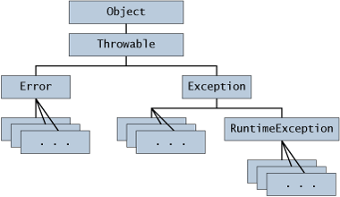

Before you can catch an exception, some code somewhere must throw one. Any code can throw an exception: your code, code from a package written by someone else such as the packages that come with the Java platform, or the Java runtime environment. Regardless of what throws the exception, it's always thrown with thethrowstatement.As you have probably noticed, the Java platform provides numerous exception classes. All the classes are descendants of the
Throwableclass, and all allow programs to differentiate among the various types of exceptions that can occur during the execution of a program.You can also create your own exception classes to represent problems that can occur within the classes you write. In fact, if you are a package developer, you might have to create your own set of exception classes to allow users to differentiate an error that can occur in your package from errors that occur in the Java platform or other packages.
You can also create chained exceptions. For more information, see the Chained Exceptions section.
All methods use thethrowstatement to throw an exception. Thethrowstatement requires a single argument: a throwable object. Throwable objects are instances of any subclass of theThrowableclass. Here's an example of athrowstatement.Let's look at thethrow someThrowableObject;throwstatement in context. The followingpopmethod is taken from a class that implements a common stack object. The method removes the top element from the stack and returns the object.Thepublic Object pop() { Object obj; if (size == 0) { throw new EmptyStackException(); } obj = objectAt(size - 1); setObjectAt(size - 1, null); size--; return obj; }popmethod checks to see whether any elements are on the stack. If the stack is empty (its size is equal to0),popinstantiates a newEmptyStackExceptionobject (a member ofjava.util) and throws it. The Creating Exception Classes section in this chapter explains how to create your own exception classes. For now, all you need to remember is that you can throw only objects that inherit from thejava.lang.Throwableclass.Note that the declaration of the
popmethod does not contain athrowsclause.EmptyStackExceptionis a not a checked exception, sopopis not required to state that it might occur.
The objects that inherit from theThrowableclass include direct descendants (objects that inherit directly from theThrowableclass) and indirect descendants (objects that inherit from children or grandchildren of theThrowableclass). The figure below illustrates the class hierarchy of theThrowableclass and its most significant subclasses. As you can see,Throwablehas two direct descendants:ErrorandException.
The Throwable class.
When a dynamic linking failure or other hard failure in the Java virtual machine occurs, the virtual machine throws anError. Simple programs typically do not catch or throwErrors.
Most programs throw and catch objects that derive from theExceptionclass. AnExceptionindicates that a problem occurred, but it is not a serious system problem. Most programs you write will throw and catchExceptions as opposed toErrors.The Java platform defines the many descendants of the
Exceptionclass. These descendants indicate various types of exceptions that can occur. For example,IllegalAccessExceptionsignals that a particular method could not be found, andNegativeArraySizeExceptionindicates that a program attempted to create an array with a negative size.One
Exceptionsubclass,RuntimeException, is reserved for exceptions that indicate incorrect use of an API. An example of a runtime exception isNullPointerException, which occurs when a method tries to access a member of an object through anullreference. The section Unchecked Exceptions — The Controversy discusses why most applications shouldn't throw runtime exceptions or subclassRuntimeException.